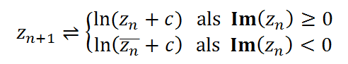

Fractaaltype: Eenden
Vergelijking:

De Julia sets van deze fractaal worden best specifiek gekleurd met de techniek van totale gemiddelde afstand in combinatie met het Bot kleurenschema
Standaard ontsnappingsstraal: 2.0
Standaard vast aantal iteraties: 50.0
Voorbeelden:
Hoofdfractaal

Duale fractaal (c = -0.6255 - 2.6089 i)

Duale fractaal (c = 0.1275 - 1.8974 i)

XHTML 1.1 Transitional | CSS2 | Creative Commons License
Sven Maerivoet (www)